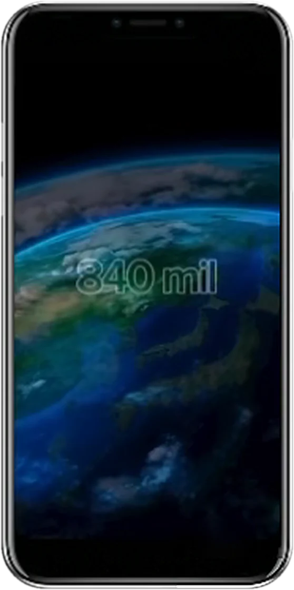
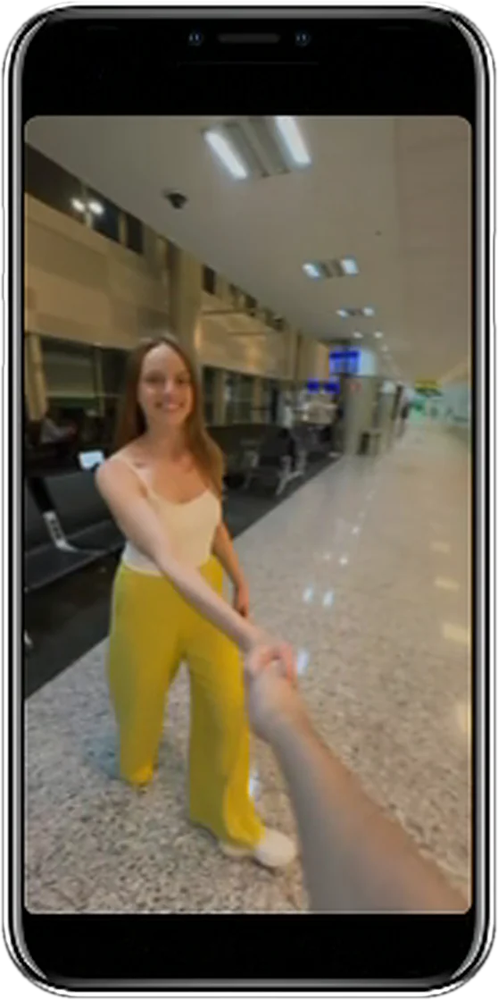
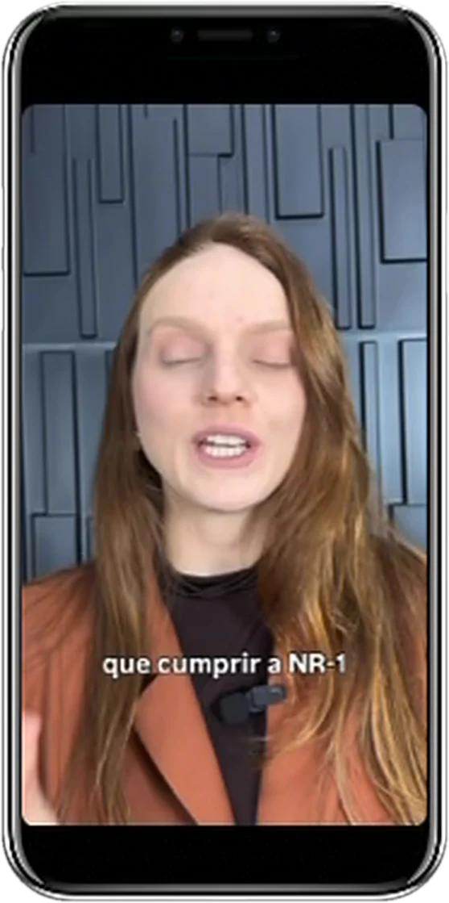

Mayara Witt Said | Projetos
- Construção e posicionamento da marca
- Estratégia e planejamento de conteúdo
- Identidade visual e direção criativa
- Criação de conteúdos autorais
- Roteiros, gravação e edição de vídeos
- Desenvolvimento de projetos e pré-lançamentos
- Captação de conteúdos presencialmente para pré-lançamento
- Foco em autoridade, conexão e posicionamento digital



Arraste para o lado ou toque no celular para ampliar